Cùng là quán cà phê chú trọng khâu thiết kế nhưng Coffee Master lại là một tên tuổi nhỉnh hơn hẳn những nơi khác. Đây xứng đáng là một trong số những quán cafe đẹp nhất Hà Nội với tông trắng nổi bật và sang trọng, thích hợp với những buổi hẹn hò.
Cùng là quán cà phê chú trọng khâu thiết kế nhưng Coffee Master lại là một tên tuổi nhỉnh hơn hẳn những nơi khác. Đây xứng đáng là một trong số những quán cafe đẹp nhất Hà Nội với tông trắng nổi bật và sang trọng, thích hợp với những buổi hẹn hò.
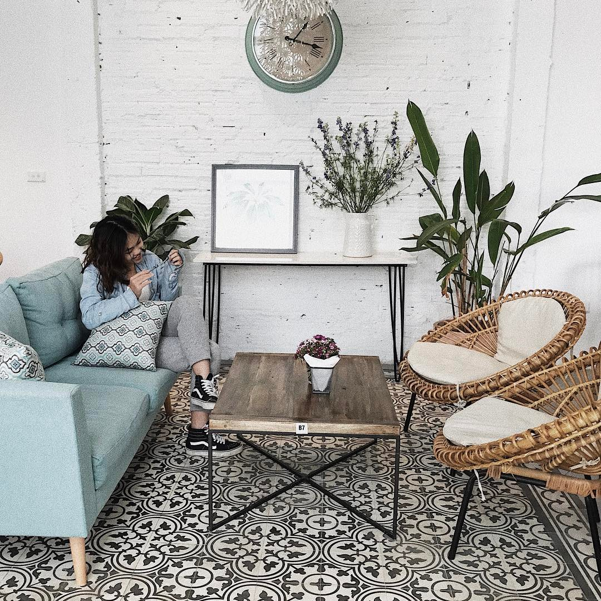
Gout nghệ thuật của Coffee Master được thể hiện qua từng chi tiết nhỏ, không thể lẫn vào đâu được, từ màu tường, bàn ghế, tranh vẽ, tủ gỗ, ấm tách pha trà. Tất cả đẹp tựa như bức tranh cổ kính. Vì thế, không khó hiểu khi quán được liệt vào danh sách những quán cafe đẹp ở Hà Nội.
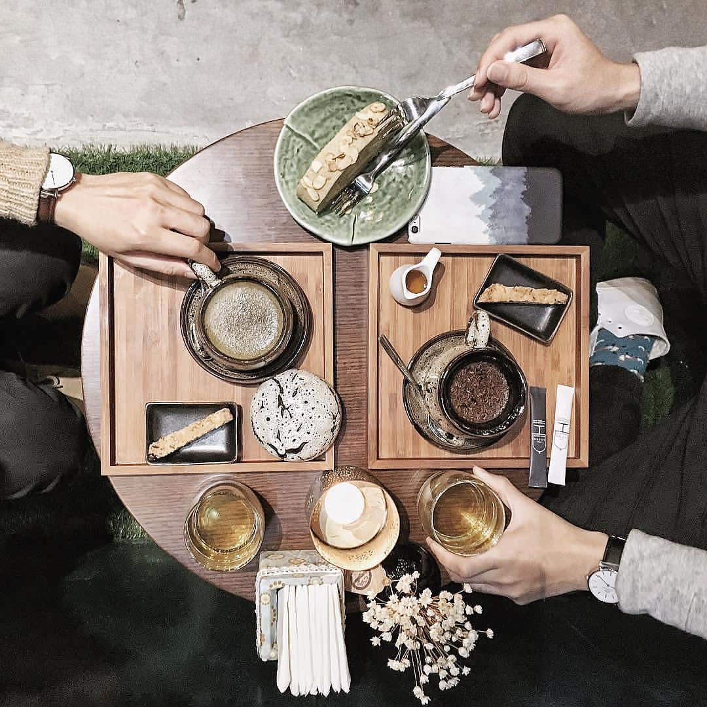
Quán trà bánh này hợp với những ai ưa không gian yên tĩnh, lãng mạn, nhẹ nhàng. Đồ uống của quán pha chế khá cầu kỳ, tuy nhiên, giá khá đắt so với mặt bằng chung. Không gian quán thích hợp cho bạn thư giãn sau một ngày làm việc vội vã nơi văn phòng.
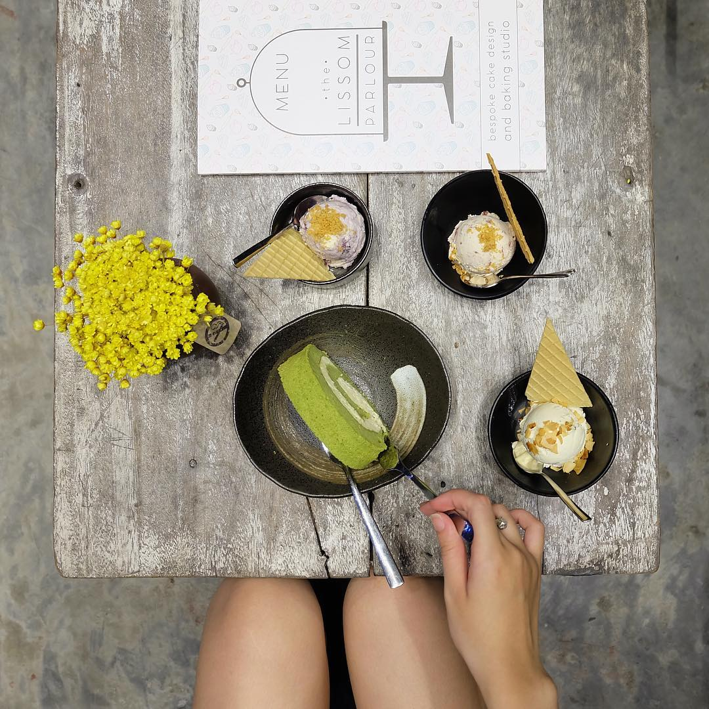
Coffee Master cái tên vẫn được giới trẻ Hà Thành vô cùng yêu thích, đặc biệt là những cô nàng bánh bèo thích không gian ngọt ngào kiểu “trà bánh”.
Trước đây quán nằm trên phố LL, mới chuyển về Hai Bà Trưng với không gian mở đến 3 tầng siêu rộng, được décor tỉ mỉ và hút hồn hơn rất nhiều so với địa điểm cũ.
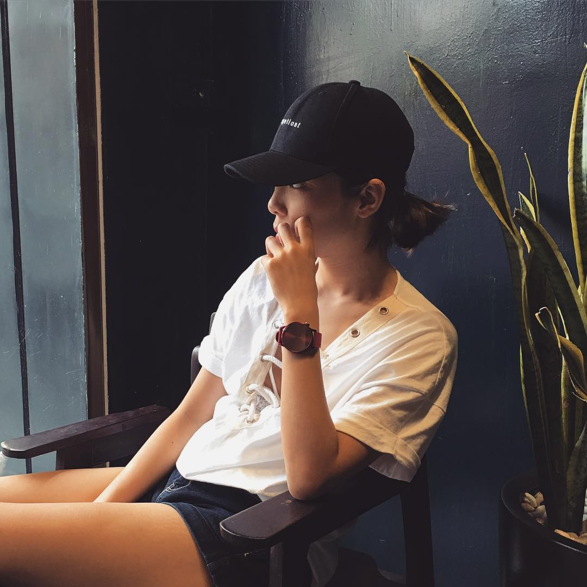
Lấy tone trắng làm màu chủ đạo với những thiết kế mang đậm phong cách Tây Âu, Coffee Master như một tòa lâu đài cổ tích, kiêu sa và đài các, không gian nhẹ nhàng vô cùng thích hợp cho những chuyện phiếm trong lúc thưởng trà.
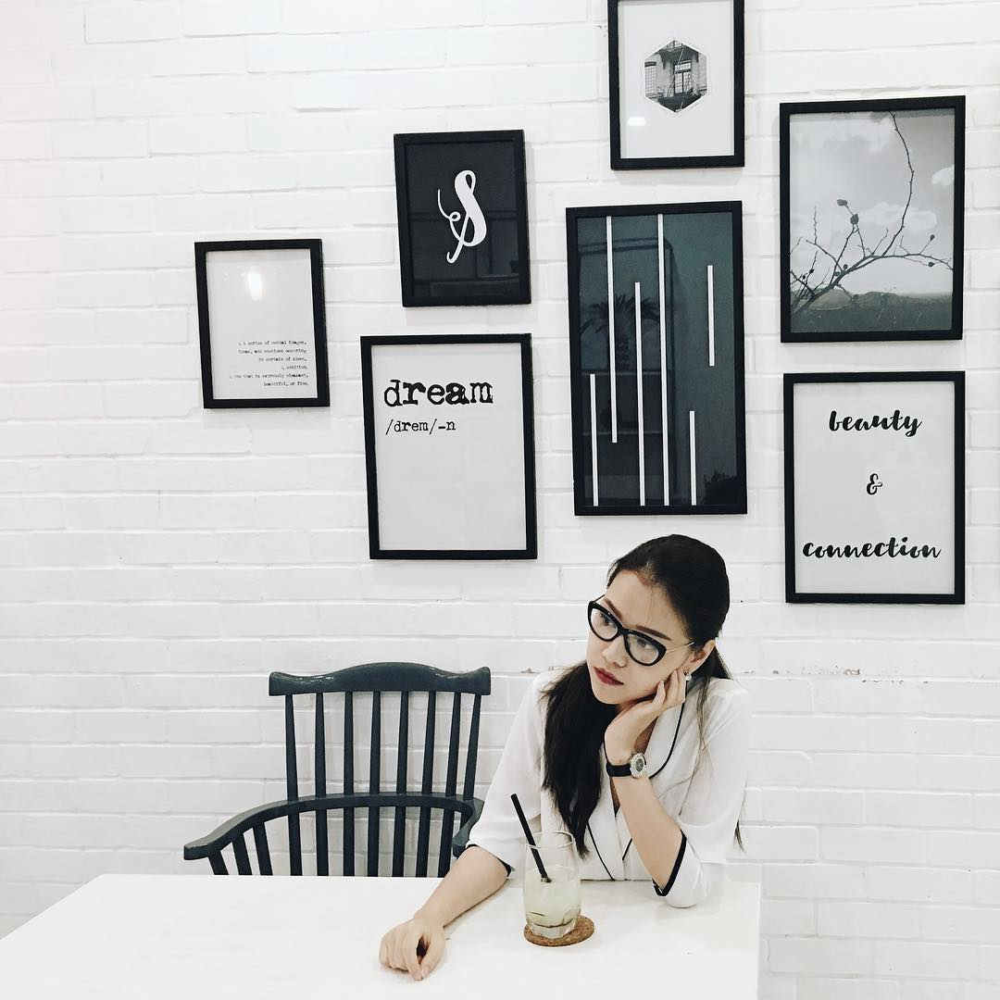
Đến Coffee Master, bạn sẽ cảm nhận đến tận tim không gian thoải mái ngập sắc xanh tươi của lá và những đóa hoa để bàn sặc sỡ nổi bần bật khắp nơi. Bàn ghế ở đây vô cùng ton sur ton, góc nào cũng đủ "deep" để bạn có thể sống ảo mỗi ngày đó nha!
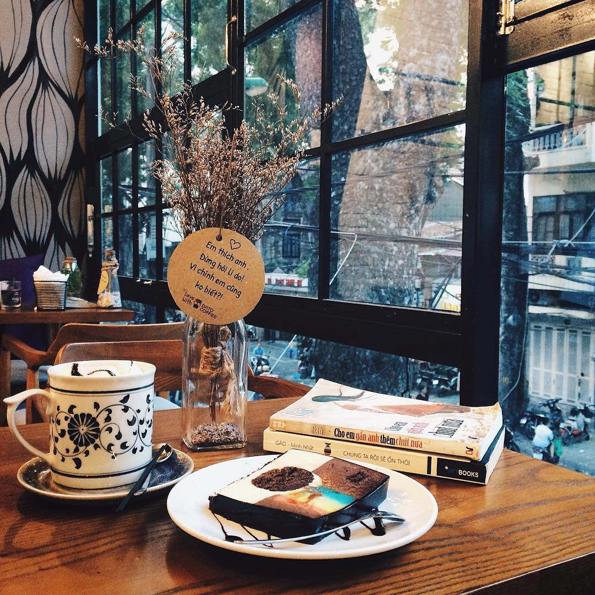
Không gian ngoài trời của quán được decor khá "chill" cùng những chiếc gối ôm nhiều màu sắc, những lọ trang trí hoa tươi handmade xinh xắn trong tone màu trắng xanh dễ chịu.
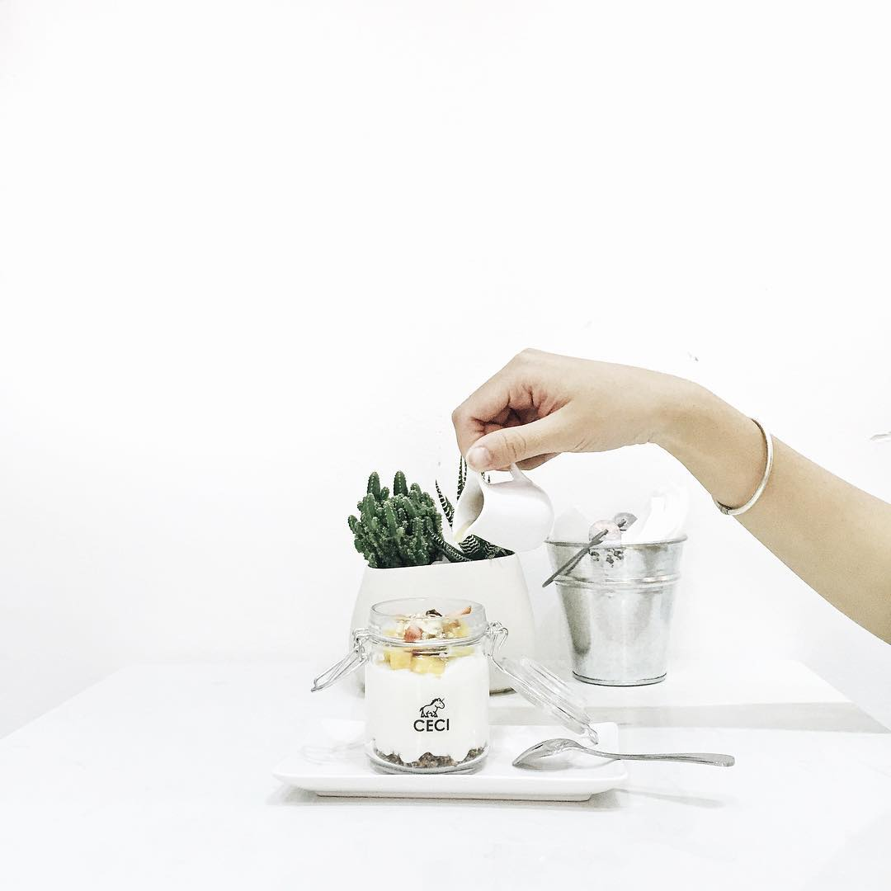
Để lựa chọn cho các bạn những chiếc máy pha cà phê phù hợp nhất với chất lượng ổn định và hiệu năng sử dụng tốt nhất. Tất cả những chiếc máy pha cà phê đều được lựa chọn dựa trên những tiêu chí cơ bản như: Cấu tạo, tính năng kỹ thuật, công suất, độ bền và giá cả theo từng phân khúc.
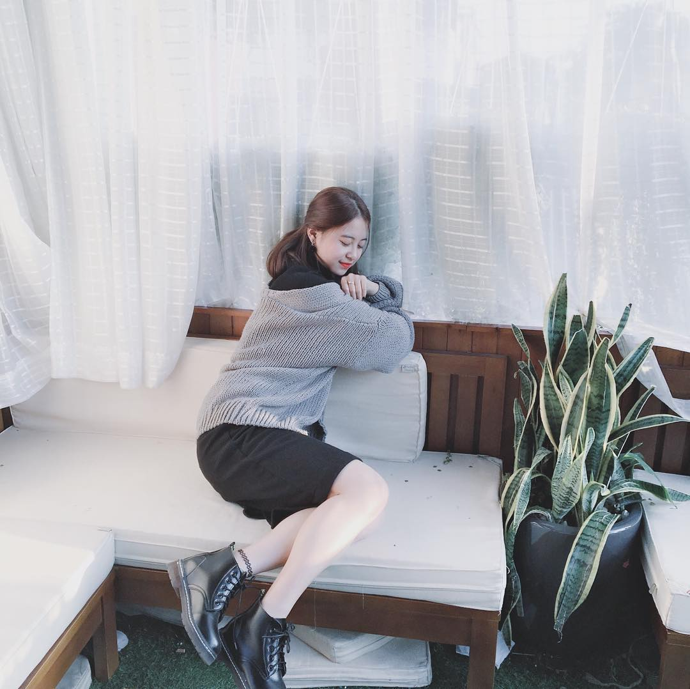
Nội thất bên trong với không gian được décor theo phong cách moroc rất dễ thương, bất cứ góc nhỏ nào khi lên hình đều ấn tượng cả nhé!
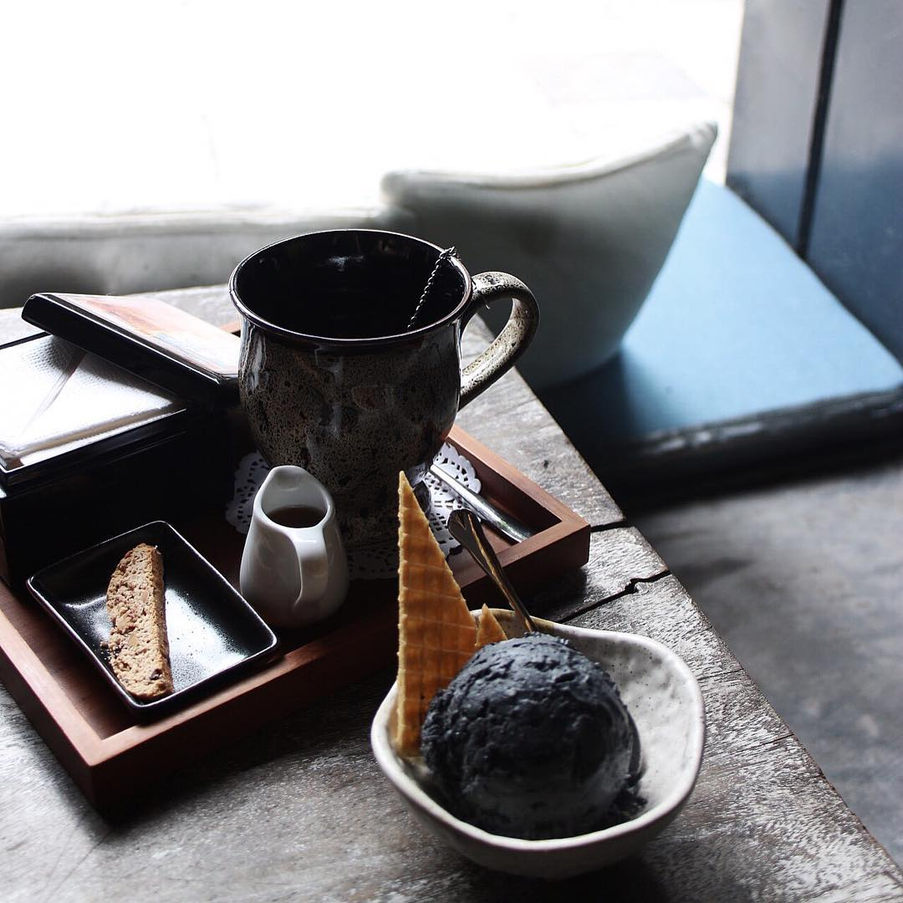
Để lựa chọn cho các bạn những chiếc máy pha cà phê phù hợp nhất với chất lượng ổn định và hiệu năng sử dụng tốt nhất. Tất cả những chiếc máy pha cà phê đều được lựa chọn dựa trên những tiêu chí cơ bản như: Cấu tạo, tính năng kỹ thuật, công suất, độ bền và giá cả theo từng phân khúc. Chúng tôi lựa chọn những sản phẩm này bằng kinh nghiệm và kỹ năng nghề nghiệp của mình, với mong muốn khách hàng luôn được uống những ly cà phê hoàn hảo nhất.
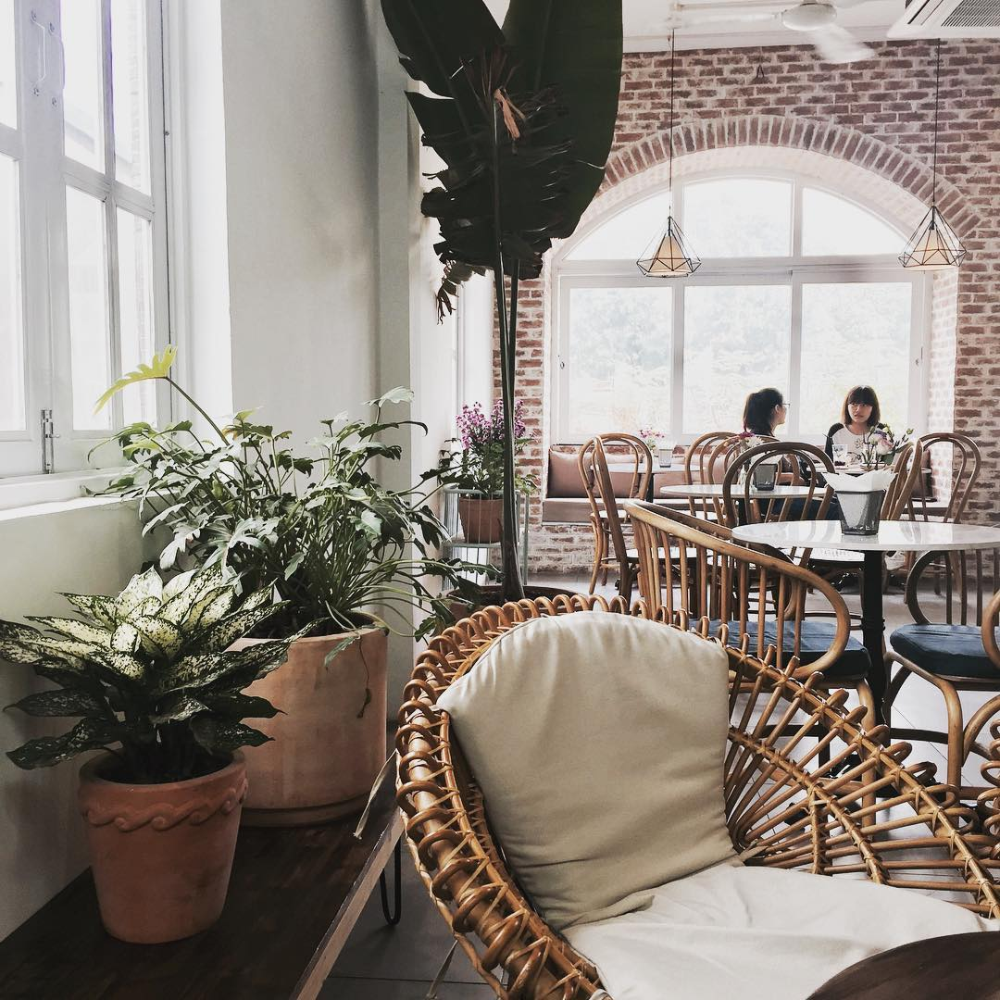
Để lựa chọn cho các bạn những chiếc máy pha cà phê phù hợp nhất với chất lượng ổn định và hiệu năng sử dụng tốt nhất. Tất cả những chiếc máy pha cà phê đều được lựa chọn dựa trên những tiêu chí cơ bản như: Cấu tạo, tính năng kỹ thuật, công suất, độ bền và giá cả theo từng phân khúc. Chúng tôi lựa chọn những sản phẩm này bằng kinh nghiệm và kỹ năng nghề nghiệp của mình, với mong muốn khách hàng luôn được uống những ly cà phê hoàn hảo nhất.
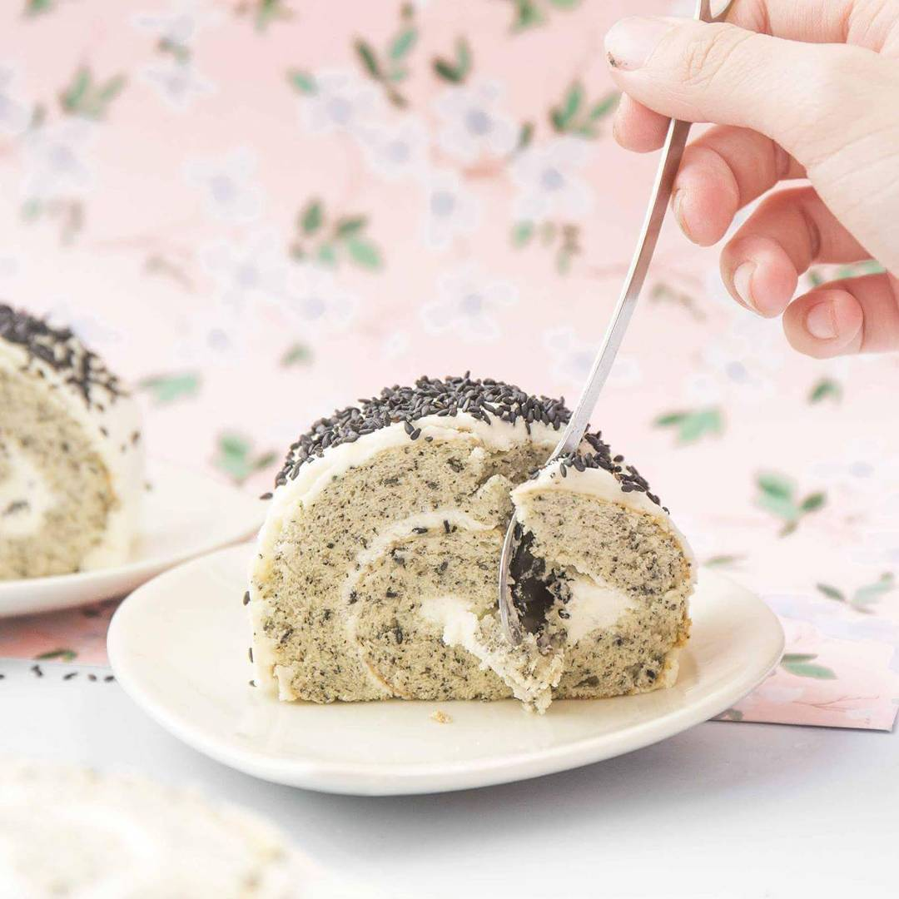
Để lựa chọn cho các bạn những chiếc máy pha cà phê phù hợp nhất với chất lượng ổn định và hiệu năng sử dụng tốt nhất. Tất cả những chiếc máy pha cà phê đều được lựa chọn dựa trên những tiêu chí cơ bản như: Cấu tạo, tính năng kỹ thuật, công suất, độ bền và giá cả theo từng phân khúc. Chúng tôi lựa chọn những sản phẩm này bằng kinh nghiệm và kỹ năng nghề nghiệp của mình, với mong muốn khách hàng luôn được uống những ly cà phê hoàn hảo nhất.
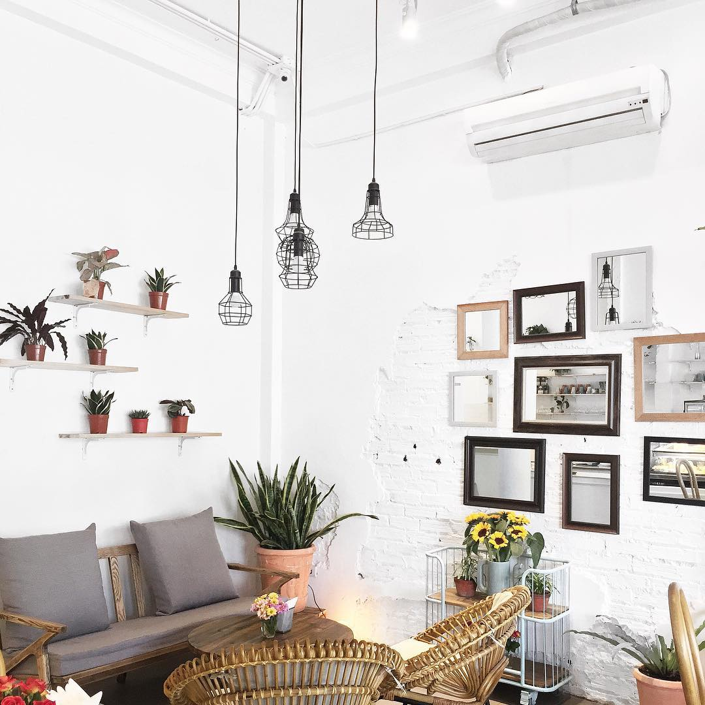
Để lựa chọn cho các bạn những chiếc máy pha cà phê phù hợp nhất với chất lượng ổn định và hiệu năng sử dụng tốt nhất. Tất cả những chiếc máy pha cà phê đều được lựa chọn dựa trên những tiêu chí cơ bản như: Cấu tạo, tính năng kỹ thuật, công suất, độ bền và giá cả theo từng phân khúc. Chúng tôi lựa chọn những sản phẩm này bằng kinh nghiệm và kỹ năng nghề nghiệp của mình, với mong muốn khách hàng luôn được uống những ly cà phê hoàn hảo nhất.
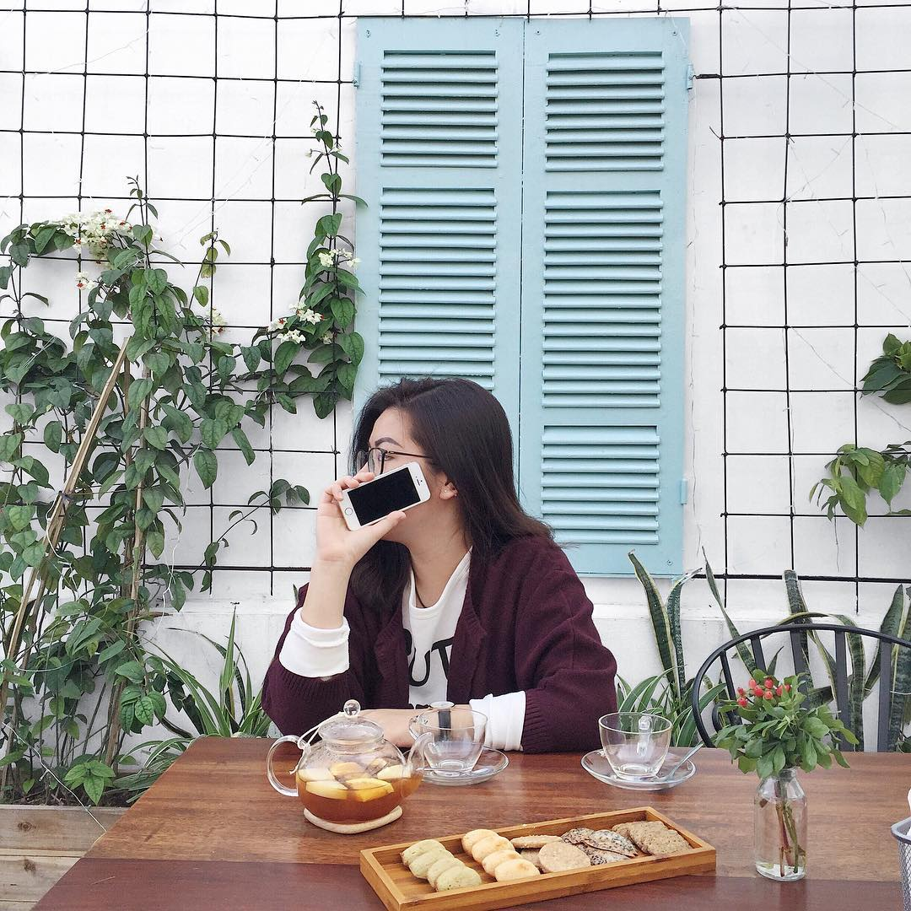
Để lựa chọn cho các bạn những chiếc máy pha cà phê phù hợp nhất với chất lượng ổn định và hiệu năng sử dụng tốt nhất. Tất cả những chiếc máy pha cà phê đều được lựa chọn dựa trên những tiêu chí cơ bản như: Cấu tạo, tính năng kỹ thuật, công suất, độ bền và giá cả theo từng phân khúc. Chúng tôi lựa chọn những sản phẩm này bằng kinh nghiệm và kỹ năng nghề nghiệp của mình, với mong muốn khách hàng luôn được uống những ly cà phê hoàn hảo nhất.
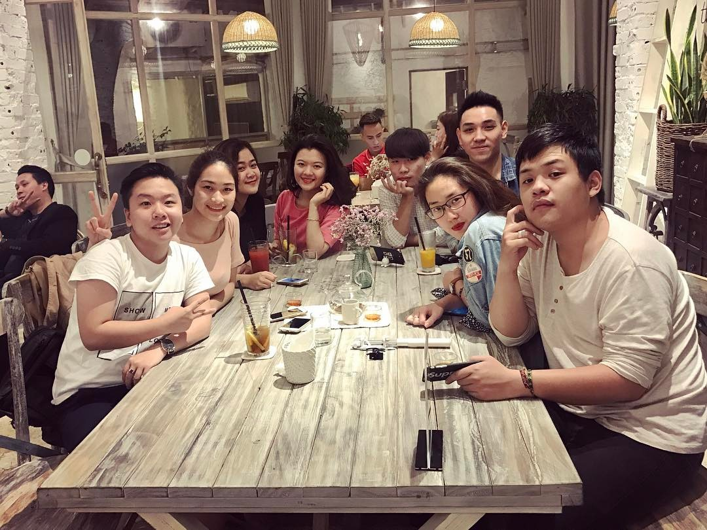
Để lựa chọn cho các bạn những chiếc máy pha cà phê phù hợp nhất với chất lượng ổn định và hiệu năng sử dụng tốt nhất. Tất cả những chiếc máy pha cà phê đều được lựa chọn dựa trên những tiêu chí cơ bản như: Cấu tạo, tính năng kỹ thuật, công suất, độ bền và giá cả theo từng phân khúc. Chúng tôi lựa chọn những sản phẩm này bằng kinh nghiệm và kỹ năng nghề nghiệp của mình, với mong muốn khách hàng luôn được uống những ly cà phê hoàn hảo nhất.
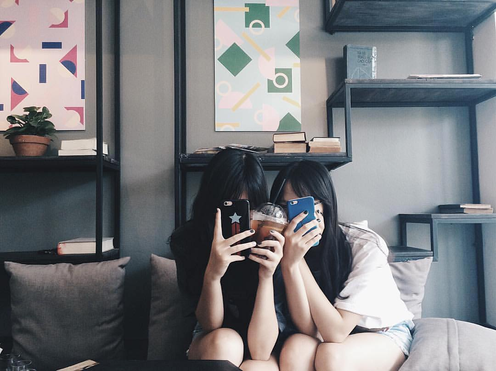
Để lựa chọn cho các bạn những chiếc máy pha cà phê phù hợp nhất với chất lượng ổn định và hiệu năng sử dụng tốt nhất. Tất cả những chiếc máy pha cà phê đều được lựa chọn dựa trên những tiêu chí cơ bản như: Cấu tạo, tính năng kỹ thuật, công suất, độ bền và giá cả theo từng phân khúc. Chúng tôi lựa chọn những sản phẩm này bằng kinh nghiệm và kỹ năng nghề nghiệp của mình, với mong muốn khách hàng luôn được uống những ly cà phê hoàn hảo nhất.
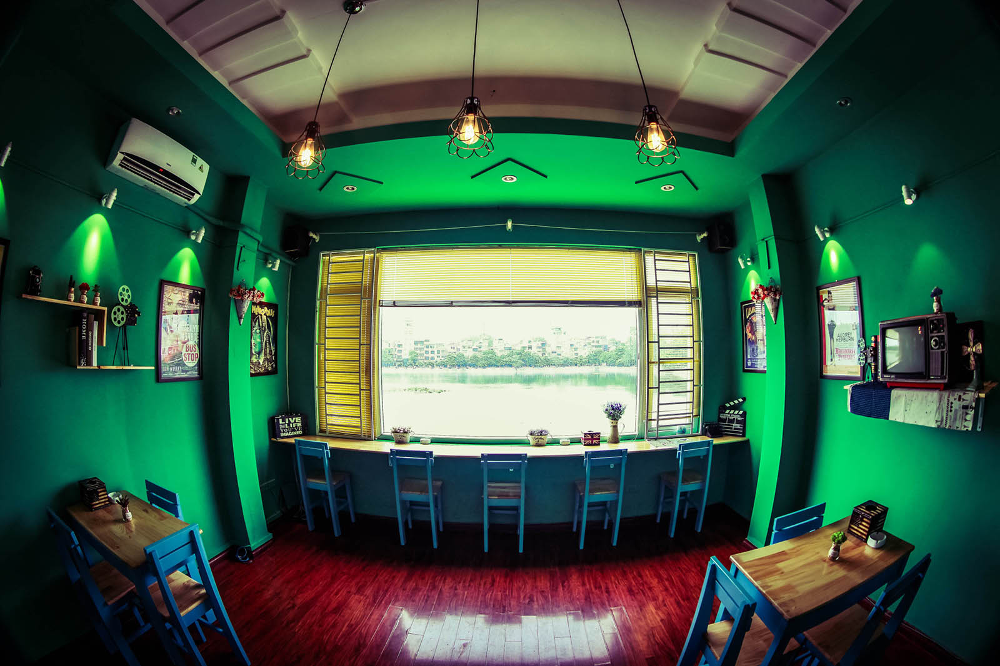


Tìm ra những hạt cà phê ngon, rang xay chúng đúng cách và đưa đến cho bạn những ly cà phê tuyệt vời mới chỉ là một phần trong công việc của chúng tôi. Đằng sau ly cà phê bạn phục vụ khách hàng sẽ luôn có bóng dáng những người thợ rang, thợ pha chế, đội ngũ quản lý chất lượng đồ uống, nhân viên hỗ trợ khách hàng và tư vấn kinh doanh của Phadin Coffee Roasters. Khi trở thành đối tác của chúng tôi, bạn sẽ được tất cả chúng tôi sẵn sàng hỗ trợ và làm việc cùng bạn. Hãy đặt niềm tin ở chúng tôi!
Chúng tôi luôn ở bên để giúp bạn tìm ra những thiết bị phù hợp nhất, lập kế hoạch và mua chúng với chi phí rẻ nhất; tư vấn thiết kế, tạo bản sắc cho quán cà phê bạn sở hữu; tạo menu đặc sắc và đào tạo nhân viên của bạn pha chế thành thục đồng thời mang tới nhiều lời khuyên để cửa hàng hoạt động hoàn hảo nhất. Đó là lý do trong suốt những năm qua đội ngũ của chúng tôi đam mê trau dồi kiến thức về chất lượng cà phê, pha chế đồ uống, setup quầy bar, phân phối nguyên vật liệu, quản lý cửa hàng và tư vấn marketing.
Đội ngũ của chúng tôi gồm các cá nhân có nhiều năm kinh nghiệm kinh doanh cà phê, nhà hàng và khách sạn. Hầu hết thành viên đều sở hữu hoặc điều hành những quán cà phê, nhà hàng đang hoạt động thành công của riêng mình. Chúng tôi đã dành vô số giờ tương tác với khách hàng để hiểu về loại cà phê khách hàng ưa thích cũng như nghiên cứu sử dụng thành thạo các trang thiết bị, xây dựng quy trình quản lý chặt chẽ nhằm tìm ra chìa khóa để đạt được mục đích cuối cùng là lợi nhuận bền vững.
Và bây giờ, chúng tôi sẽ chia sẻ với bạn tất cả những hiểu biết của chúng tôi về kinh doanh cà phê. Cafe Master luôn sát cánh bên bạn để giải quyết những khó khăn trong công việc kinh doanh, hỗ trợ bạn bằng mọi khả năng chúng tôi có thể. Công việc kinh doanh ổn định với lợi nhuận bền vững dành cho bạn là mục tiêu quan tâm hàng đầu của chúng tôi. Đặt uy tín, nhanh chóng và hiệu quả lên hàng đầu. Chúng tôi cho mượn máy trong thời gian sửa chữa và nhận bảo hành dài hạn cho lỗi đã sửa với trách nhiệm cao.
CÔNG TY CỔ PHẦN CÀ PHÊ MASTER
Trụ sở & nhà máy:
Địa chỉ: Ngõ 14, Nguyễn Đình Chiểu, Hai Bà Trưng, Hà Nội.
Đặt hàng Hà Nội và các tỉnh Miền Bắc:
024 3221 6405 - 0946 999 875
Đặt hàng TP HCM và các tỉnh Miền Nam:
0968 999 875
Thời gian làm việc:
Thứ 2 - Sáng thứ 7
Sáng: 8h - 12h ; Chiều: 13h- 17h